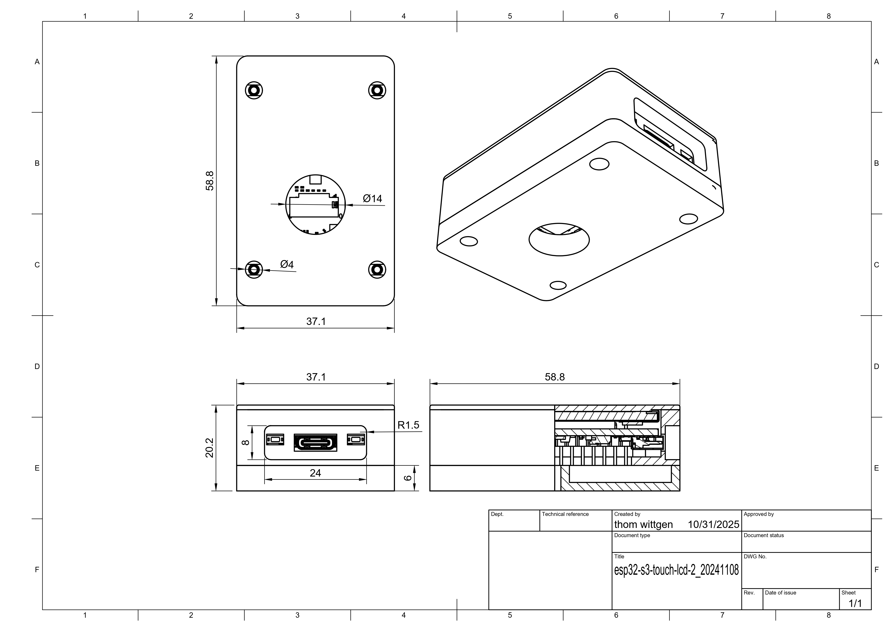

PO8 - Ontwerp voor alle breinen

Introductie
Voor dit project moesten we een tool maken voor iemand met een ander breinprofiel (denk aan ADHD, Autisme, Dyslexie).
Deze tool moest een persoon met een van deze aandoeningen kunnen helpen, door moest twee zintuigen tegelijk beinvloeden en origineel te zijn.
Startactiviteit
We moesten het project beginnen met een startactiviteit. In deze actitiveit moesten we ons inleven in de doelgroep door opdrachten te doen die de doelgroep ook moeilijk vindt.
We moesten bijvoorbeeld een verhaal schrijven terwijl we onze niet-dominante hand gebruikten, of een tekening maken terwijl we afgeleid werden door andere mensen.
Na deze opdrachten hebben we besproken hoe we ons voelden tijdens deze opdrachten en wat we moeilijk vonden.
Ik vond dit wel een creatieve opdracht van de docent, omdat we zo een beter beeld kregen van de doelgroep. Ik had zelf wel wat moeite met het schrijven met een handschoen, en de dyslexie-leesopdrachten waren ook best moeilijk.
Interview 1
Na de startactiviteit hadden we groepjes gemaakt en moesten we interviews gaan doen. We hebben de volgende breinprofielen geïnterviewd:
Een volwassen man met ADHD
Een jongvolwassen jongen met Dyslexie
Een jongvolwassen meisje met Autisme
We hebben de volgende vragen gesteld:
1. Wat zijn de dagelijkse grootste uitdagingen door uw aandoening?
2. In welke situaties heeft u last van jouw aandoening zoals?
3. In welke situaties heeft u geen last van jouw aandoening zoals?
4. Wat gebruikt u om dat tegen te gaan?
5. Wat gebruikt u om stress, afleidingen of lastigheid tegen te gaan?
6. Hebt u ook momenten of situaties waarin uw aandoening van pas komt of dat u er blij mee bent?
7. Wat denkt u dat helpt in uw situatie met deze aandoening?
1. afleiding, overzicht houden in wat er op de planning staat, uitstellen van taken
2. Wanneer ik vermoeid ben. drukke situaties met veel afleiding, wanneer er meerdere vragen tegelijk worden gesteld en er geen duidelijke instructies zijn.
3. Overzichtelijke taken. Omgeving met weinig afleiding (tel, pc)
4. situatie creëren waarin er meer rust is. ANC koptelefoon, medicatie, verduidelijking vragen als de opdracht niet duidelijk is
5. Beweging/sport, planning maken als het nodig is
6. Bedenken van (out of the box) oplossingen, sociale conversaties, brainstormen
7. Regelmatig ritme, voldoende slaap, beperken van schermgebruik en dan vooral socials. Voldoende drinken over de dag. Duidelijke planning en soms medicatie.
1. Lange teksten lezen; ik raak snel vermoeid en verlies de draad.
2. Ik lees vragen soms verkeerd of sla woorden over.
3. In korte, overzichtelijke teksten met duidelijke structuur en goed contrast heb ik minder problemen.
4. Ik gebruik oortjes met muziek en blokkeer tekst zodat alleen het relevante zichtbaar is.
5. Soms moet ik een passage meerdere keren (tot vijf keer) opnieuw lezen voordat het goed gaat.
6. Niet echt, ik ervaar weinig voordelen van mijn aandoening bij lezen.
7. Oefenen met lezen, korte zinnen, visuele ondersteuning (kopjes, markeringen) en regelmatige pauzes helpen.
PS: Dit interview is grammatisch aangepast om het leesbaarder te maken.
1. Niet-voorbereide sociale interacties; omgaan met veranderingen; niet genoeg duidelijkheid.
2. Wanneer mensen mij een vraag stellen op werk; wanneer het van seizoen verandert; wanneer iemand mij een opdracht geeft maar niet precies uitlegt wat ik moet doen.
3. X.
4. Veel vragen stellen wanneer iemand mij een opdracht geeft, zodat ik precies weet wat ik moet doen.
5. Veel alleen tijd; muziek luisteren.
6. Door mijn autisme heb ik vaak een hyperfixatie op een serie, film of een karakter daarin, waardoor ik dat heel leuk vind en er vaak mee bezig ben.
7. Vrienden hebben die last hebben van dezelfde dingen, zodat zij jou begrijpen.
PS: Dit interview is grammatisch aangepast om het leesbaarder te maken.
Analyse
Na de interviews hebben we de antwoorden geanalyseerd en gekeken naar overeenkomsten en verschillen tussen de verschillende breinprofielen.
We hebben ook gekeken naar welke zintuigen we konden aanspreken met onze tool, en hoe we dat het beste konden doen.
We kwamen uiteindelijk op de gedachte om meer richting de kant van lezen te gaan, omdat dat een best populair probleem was, en we al wat ideeën hadden om dat te verbeteren.
Brainstorms
We hebben verschillende brainstormtechnieken gebruikt om ideeën te krijgen voor onze tool. we hebben de volgende brainstormtechnieken gebruikt:
- Mindmap
- How might we? (Hoe zullen we?)
- Crazy 8
Mindmap

How might we?


Crazy 8
Marktonderzoek
Voor het marktondezoek hebben we een pinterest board gemaakt met de soorten breinen en de symptomen voor verschillende aandoeningen.
Pinterest board
Schetsen
We wisten eigenlijk voordat we gingen beginnen al wat we gingen maken, namelijk een klein schermpje met een camera, die teksten kan lezen en dan deze kan omzetten in hoog contrast/een ander lettertype.
Dit zou ideaal zijn voor mensen met dyslexie/slechtzienden als ze aan het lezen zijn; omdat ze niet alleen visuele hulp krijgen maar optioneel ook audio hulp kunnen krijgen, door bijvoorbeeld een speakertje of koptelefoon.
Natuurlijk moesten we van te voren wel wat schetsen maken, om een beetje een idee te krijgen over wat een goede keuze is qua design.
Schets 1
Voor onze eerste schets hadden we een soort scherm met handvatten, een camera en LED verlichting. de LED verliching zou het oppervlak verlichten, wat het makkelijker leesbaar maakte voor de camera. Verder waren de handvatten ook handig voor mensen die wat meer moeite hadden met dingen vasthouden, sinds het een goede grip op het apparaat zou geven.
Extra materiaal kost natuurlijk wel meer, dus we hadden de keuze om dit niet als eindontwerp te gebruiken. het scherm was ook te groot, waardoor het moeilijk mee te nemen was.
Schets 2
Voor onze 2de schets hebben we een ander doel in oog gesteld; Budget. We hebben alle dure features van ontwerp 1 afgehaald, wat het goedkoper, compacter en beter maakte.
Het nieuwe ontwerp was makkelijker mee te nemen, goedkoper, en beter. Wel hebben we de ledjes er wel nog ingelaten, voor het verlichten van de onderoppervlakte. Ik vond dit wel een mooie schets, dus deze schets is ook zeker in gedachte gebleven.
Schets 3
De derde schets was weer iets groter dan de 2de, namelijk 8x8cm. dit is ongeveer de grootte van een appel, maar dan plat. hij had nogsteeds ledjes, geen handvaten en nogsteeds een camera.
deze was wel vierkant, wat misschien oncomfortabel zou kunnen zijn voor gebruikers om vast te houden. het was geen inspiratie voor ons eindproduct.
Schets 4
Schets 4 was de laatste schets en ook een werkende schets van het eindproduct. dit is een digitale schets gemaakt in Fusion360, met afmetingen en andere details.
Prototypes
Voor de prototypes hebben we 3 verschillende protoypes gemaakt:
Een kartonnen to-scale versie, om een beetje een feeling te krijgen in de handen, en te kunnen bedenken hoe we verder zouden kunnen gaan,
Een "naakte" versie, dit was eigenlijk alleen een ESP32-S3 Development board met een OV5640 5MP camera. Dit prototype was vooral om de software werkend te maken, en was de absolute minimum.
Een werkende versie, ook wel bekend als ons eindproduct. Deze was gemaakt na feedback op onze eerste 2 prototypes (zie kopje "feedback"), en had een ge3dprinte behuizing, bestaand uit 2 lagen die zichzelf opstapelde en vastklemde aan de development board met schroeven. Deze behuizing geeft een beter manier om de module vast te houden, beschermt de elektronica en zorgt dat de camera vastzit en niet rondwiebelt.
In de fotos zijn de prototypes te zien.
Prototype 1


Prototype 2


Prototype 3 (Eindproduct)


Feedback
Op onze prototypes hebben we ook wat feedback gekregen, en hebben dit ook geprobeerd te implementeren. De software had wat probleempjes, met missende exit knoppen, glitchende camera etcetera. dit is nu meerendeels opgelost, maar is nogsteeds een challenge. Ik snapte persoonlijk niet heel veel van de code, ookal was ik de programmeur, dit kwam vooral door de slechte documentatie van het systeem die we gebruiktte. verder werkte de normale camerafunctie wel goed.
Het ontwerp zag er volgens veel mensen goed uit. Het was simpel, het scherm liep mooi over met het lichaam en het voordeel van een USBC oplader is ook fijn. verder zou er in de toekomst wel bijvoorbeeld een batterij kunnen toegevoegd worden, zodat je niet met een kabel zit.
De software hebben we helaas niet helemaal top kunnen testen, maar we hebben ons best gedaan. verder was er wel een werkende test die de kleuren en contrast aanpastte (handig voor mensen die gevoelige ogen hebben).
De reden waarom we de dyslexie test niet konden doen was omdat er geen fatsoenlijk werkende "OCR" was. dit is een soort programma/algoritme die tekst in fotos herkent en dit dan kan teruggeven als normale tekst. Het bord wat ik had uitgekozen was hier niet krachtig genoeg voor, waardoor je een main server zou moeten hebben met Linux, die dan alles processed en aanpast.
Eindproduct
Ik ben vrij trots op ons eindproduct. We hebben ook een verpakking ervoor gemaakt die het eindproduct vast kan houden, met een ge3dprinte insert en wat foam. Deze is te zien in de fotos hieronder:


Zelfreflectie
Ik vond dat ik het best goed heb gedaan dit project, ookal beval het met niet helemaal. Ik merkte dat ik een beetje inspiratieloos het project begon maar dat het na een tijdje wel weer terugkwam, misschien kwam dit wel omdat ik het moeilijker vind om dingen te maken die origineel zijn, of omdat ik het niet zon leuk onderwerp vondt. Verder heb ik wel nog wat dingen geleerd, ik ben beter geworden in Arduino code (C++), heb beter geleerd teamleider te zijn, en heb ook geleerd hoe ik de volgende keer taken beter kan verspreiden. Het project had overal wel beter kunnen verlopen qua process, maar ik denk dat er wel een mooi eindresultaat uit is gekomen.
Hier zijn verder ook nog wat links die belangrijk kunnen zijn:
Onedrive
Pinterest board